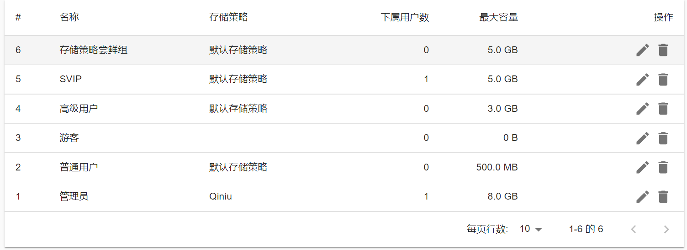

【FAQ】PWFM 启动~
本文最后更新于：a few seconds ago
引言
在经过了 PW Cloud 的失败以后，我还是不甘心，因此，我还在自建网盘的路上奔走着…
到现在，取得了一点点微小的成果，就想分享一下。
何为 PW File Manager
和 PW Cloud 一样，都是以 Cloudreve 为基础进行搭建的。
毕竟真的hin好看
啊回归正题 所谓 PW File Manager，就是如它的「站点描述」一样，A online file manager provided by PixelWine.
它的宗旨是Love and Peace，所以请使用 PWFM[1] 的各位不要上传奇奇怪怪的文件~
其实讲这么多 本质不还是 PW Cloud 的替代品嘛（
你可以用它上传文件，admin 保证绝对绝对不会看的~
其实就是云盘，不靠谱的那种
Where?
毕竟只是个实验性项目，所以就暂且用 IP + Port 凑合一下吧。
分割线
下面是《比较专业》的内容，可能比较枯燥乏味，TLDR 请到「结束了？」。
存储策略？
目前「通用存储策略」包含七牛云存储和本机存储，普通用户优先使用本机存储，只有可怜的500MB，充钱（氪金）用户可以申请使用七牛存储，高人一等的管理员当然是用七牛了啊（
「尝鲜存储策略」的话，目前在公测的有 OneDrive 和 阿里云 OSS，值得注意的是，阿里云 OSS是白嫖的，很容易哪天就过期了，数据就全都没了。
想吃螃蟹尝鲜的用户，可以联系我申请，联系渠道在文末。免费用户和充钱用户都能申请（
关于其他
请参考 
过两天会再更新这篇文章 虽然大概率会鸽
结束了？
如欲了解详情，请至 Contact Me 页面，通过其中标识的联系方式详询。
Footnotes
- PW File Manager. ↩
Unless otherwise stated, all articles of PixEL | Blog use the CC BY-NC-SA 4.0 Agreement. Please indicate the source for reprinting.